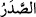
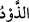
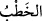

ağırlık vermek istemem. İnşallah beni iyi kimselerden (işverenlerden) bulacaksın.
28. (Mûsâ) şöyle cevap verdi: Bu seninle benim aramdadır. Bu iki süreden
hangisini doldurursam doldurayım, demek ki bana karşı husumet yok.
Söylediklerimize Allah vekildir.
“Mûsâ, Medyen suyuna varınca,”
“
” kelimesi, suya gelmek mânâsınadır. Zıddı ise sudan dönmek anlamına gelen “
” kelimesidir. Müfredât’da der ki: Bu fiil esasen “suya yönelme” mânâsınadır.
Sonra başka şeyler için de kullanılagelmiştir. Medyen suyu denilen yer bir kuyudur ve
Medine’ye üç mil veya daha az bir mesâfededir. İnsanlar oraya su ihtiyaçlarını
karşılamak için gelirlerdi. Yani, “Mûsâ (a.s.) oraya ulaşıp Medyen suyuna varınca...”
demektir.
İbn Abbâs (r.a.) der ki: Mûsâ (a.s.) oraya gelince, vücûdunun zayıflığından dolayı
karnındaki sebze ve otların yeşil rengi görünüyordu.
“Orada (hayvanlarını) sulayan bir çok insan buldu. Onların gerisinde de,
(hayvanlarını) engelleyen iki kadın gördü.”
“Mûsâ (a.s.) kuyunun yanında ve etrafında, hayvanlarını sulayan kalabalık bir insan
topluluğu gördü. Aşağısında da hayanlarının öne çıkmasına mâni olmaya çalışan iki
kadın gördü ki bunlar Şuayb (a.s.)’ın kızlarıydı.” Nitekim, Kitâbü’t-ta’rîf’de bu şekilde
geçmiştir.
“
” ; geri durmak, kaçınmak ve uzak tutmak mânâlarına gelir. Burada “mani olmak,
engel olmak” anlamında kullanılmıştır. Yani, “koyunlarının kuyuya gitmesini engelleyen
iki kadın…” demektir.
Kâşifî der ki: Mûsâ (a.s.)’da var olan nebîlere mahsus zâtî şefkat sebebiyle yanlarına
gidip lütuf ve ikram ile:
“Onlara: Derdiniz nedir? dedi.”
“
” kelimesi, çokça konuşmayı gerektiren önemli işler için kullanılır.
Yani, diğer insanların hayvanlarını suladıkları gibi niçin siz de hayvanlarınızı
sulamıyor ve onların kuyuya yaklaşmasına izin vermiyorsunuz?
Bazıları demiştir ki: Mûsâ (a.s.), yabancı iki kızla konuşmayı nasıl câiz gördü? Bu
sorunun cevabı şudur: O nefsinden emindi ve fitneye düşmekten korunmuştu. Bu
konudaki mâsûmiyetini bildiği için onlarla konuştu. Nitekim şöyle denilmiştir: Bir
peygamber, şâhidler olmaksızın da bir kadınla evlenebilir. Çünkü şâhidler, akdi inkâra
karşı korumak içindir. Peygamber ise nikâhının inkârından korunmuştur, yahud da